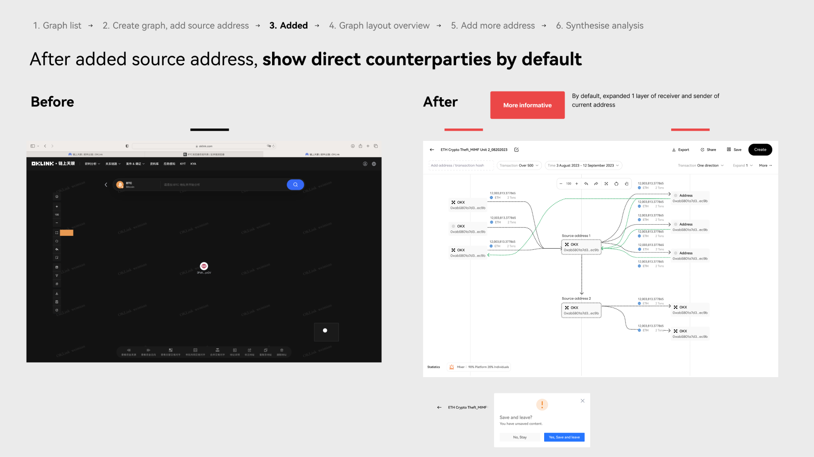

Intro
• Chaintelligence : A transaction visualization tool that helps compliance professionals and OTC owners identify crypto crimes and risks.
• Background: Not many users use it after launch due to its complex design (even for internal users). Therefore, to catch up with regulatory progress in Hong Kong market, we plan to revemp.
• To define problem, we interviewed 3-5 compliance officer across APAC and states. below are the findings.
1. Use scenarios & User journey
Users: compliance officers & regulators
Compliance investigators from crypto exchanges and institutions.
Scenarios: risk investigation & analysis
• When the compliance team gets alerts from the system, like when a big transaction happens between an address and a flagged one, they will dig deeper to find out who else is involved and how much money is moving by looking at the graph.
• This process involves handling a significant amount of data, complex interactions, and updates that happen frequently, about every 40 to 60 minutes.
• Device: small-screen laptop and tablet
Goal: Identify suspicious pattern and document
After completing the analysis and synthesizing the information, compliance officers/ regulators will the graph and document it locally.
Current User journey & painpoints

2. Solution Before vs After
Step 1 - graph list

Step 2 - create graph

Step 3 - add source address

Step 4 - map layout & edit

Step 5 - add more address

Step 6 - synthesise information

Other projects at OK